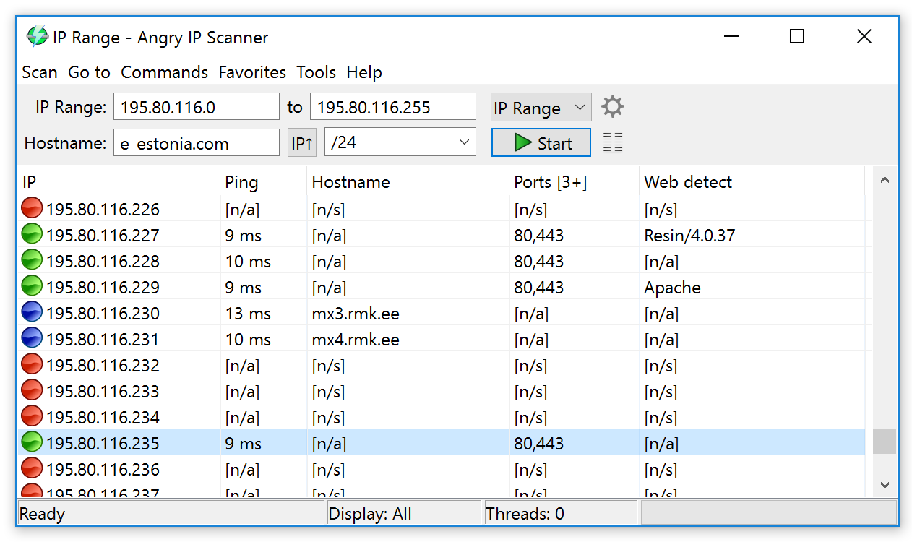
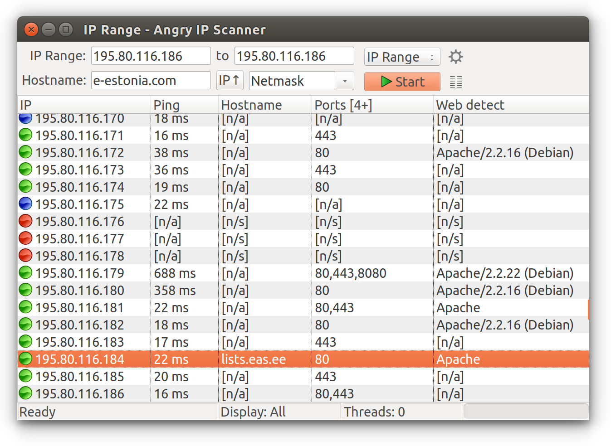
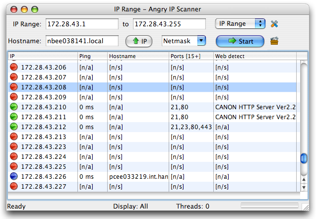
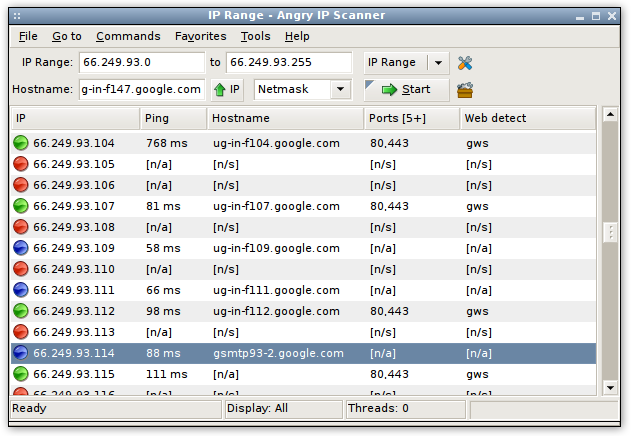

<h1>{{ page.title }}</h1>

Here is how main window of Angry IP Scanner 3.x looks like on various operating systems.

<h3>Windows 10 <small>HiDPI</small></h3>
<a href="/download/#windows"></a>

<h3>Ubuntu <small>HiDPI</small></h3>
<a href="/download/#linux"></a>

<h3>Older Mac OS X</h3>
<a href="/download/#mac"></a>

<h3>Older Linux</h3>
<a href="/download/#linux"></a>

<h3>Windows 7/Vista</h3>
<a href="/download/#windows"></a>

<h3>Windows XP <small>(no longer supported)</small></h3>
<a href="/download/#windows"></a>
